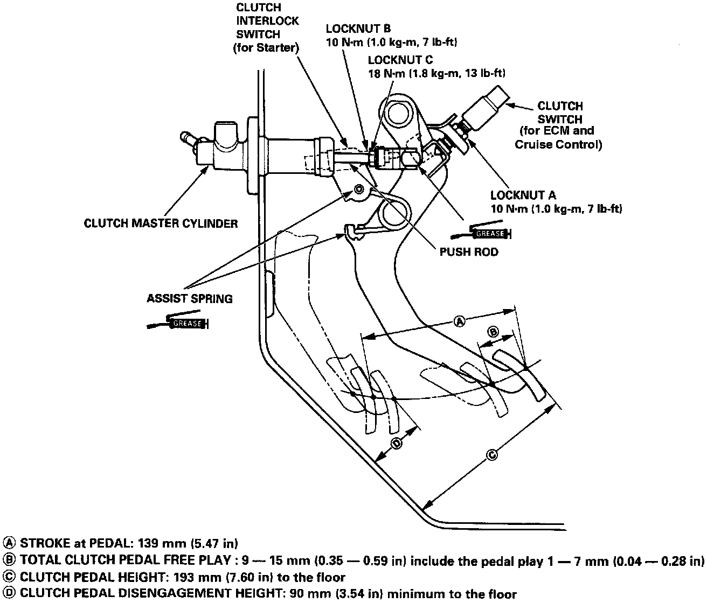

Clutch Switch: Adjustments
NOTE: The clutch is self-adjusting to compensate for wear.CAUTION: This procedure must be followed step-by-step in order to properly adjust the clutch switch (for the Engine Control Module [ECM] and cruise control), and the [1][2]clutch interlock switch (for the starter interlock). Failure to adjust the pedal linkage and switches properly may result in zero clearance between the clutch master cylinder piston and the push rod, which can result in clutch slippage or other clutch problems.
Clutch Pedal & Switch Adjustments:

1. Loosen locknut A, and back off the clutch switch until it no longer touches the clutch pedal.
2. Loosen locknut C, and turn the push rod in or out to get the specified stroke (A) and height (C) at the clutch pedal.
3. Tighten locknut C.
4. Thread the clutch switch in until it contacts the clutch pedal.
5. Turn the clutch switch in an additional 1/4 - 1/2 turn.
6. Tighten locknut A.
7. Loosen locknut B and [1][2]clutch interlock switch.
8. Measure the clearance between the floor board and clutch pedal with the clutch pedal fully depressed.
9. Release the clutch pedal 15 - 20 mm (0.59 - 0.79 in) in from the fully depressed position and hold it there.
- Adjust the position of [1][2]clutch interlock switch so that the engine will start with the clutch pedal in this position.
10. Thread the [1][2]clutch interlock switch in an additional 1/4 - 1/2 turn.
11. Tighten locknut B.